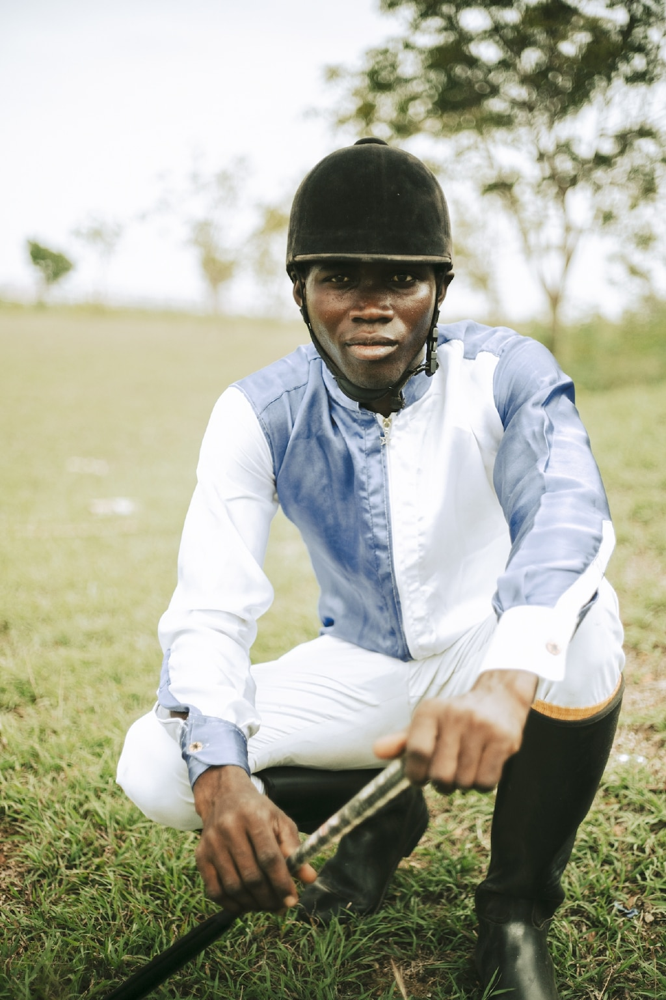

Magazine
What are the animals thinking?
Read

Magazine From the editor
Why we set out to uncover the mysteries of animal minds
Read

How these two photographers got inside the minds of animals
Read
Todays Picks

History & Culture
Like a dystopian novel: Puerto Rico still mourns, five years after Maria
Animals
Wildlife Watch
The high-stakes quest to save a behemoth, croaking fish
History & Culture
The warriors of this West African kingdom were formidable-and female

Travel
How Little Rock is reckoning with the Trail of Tears

Environment
Marine heat waves are rising. What are these blobs of hot water?

History & Culture
Ghana's jockeys cherish their horses-and their traditions